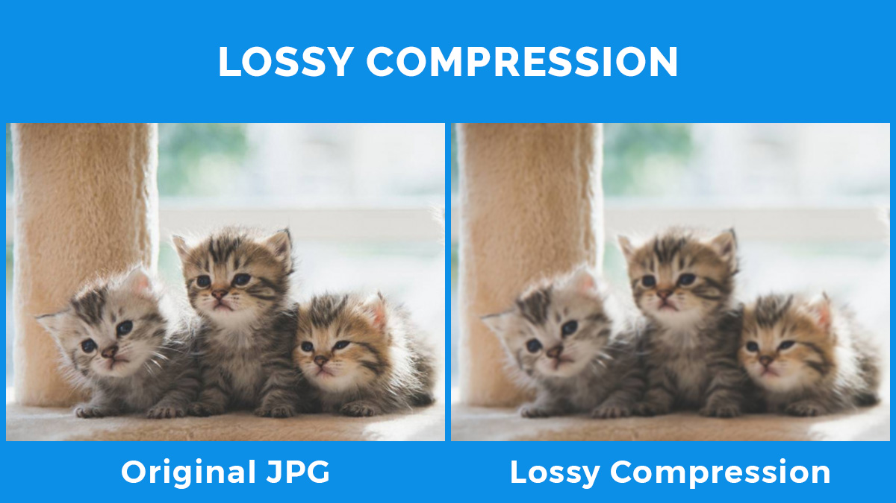

Afbeeldingen en geluidsbestanden bevatten veel details en nemen daardoor ook erg veel opslagruimte in. het kost hierdoor veel data en tijd om je documenten en afbeeldingen te downloaden. Om hier iets tegen te doen bestaat er bestandscompressie. Dit zorgt ervoor dat de bestandsgrootte wordt verkleind. hierdoor zal de downloadsnelheid van je telefoon toenemen. Bij compressie maken we onderscheid tussen Lossy compression en Lossless compression.
Lossy compression is een vorm van compressie waarbij de informatie uit het bestand wordt aangepast en verwijderd. Als je een afbeelding hebt waar heel veel verschillende kleuren in zitten waarvan je het verschil bijna niet ziet kunnen deze tinten worden weggelaten waardoor het bestand kleiner wordt. de kwaliteit zal wel lichtelijk afnemen. De afbeelding hieronder laat ziet zien wat de lossy compression met de afbeelding doet. De kilobyte's(KB) zijn afgenomen waardoor de kwaliteit slechter is geworden. Een vorm waarbij lossy compression wordt gebruikt is de methode van JPEG of JPG op je telefoon. je telefoon pas dan automatisch de compressie toe om zo opslag te besparen.
Bij Lossless compression wordt de bestandsgroote aangepas zondere verlies van kwaliteit. Ook wordt er geen informatie verwijderd. de inhoud van de afbeelding wordt alleen op een andere manier gebruikt. Een bestand dat lossless compression bevat kan altijd weer terug worden gezet naar het origineel. Het wordt vaak gebruikt voor dingen, zoals spreadsheets waarbij het behoud van de inhoud van belang is.